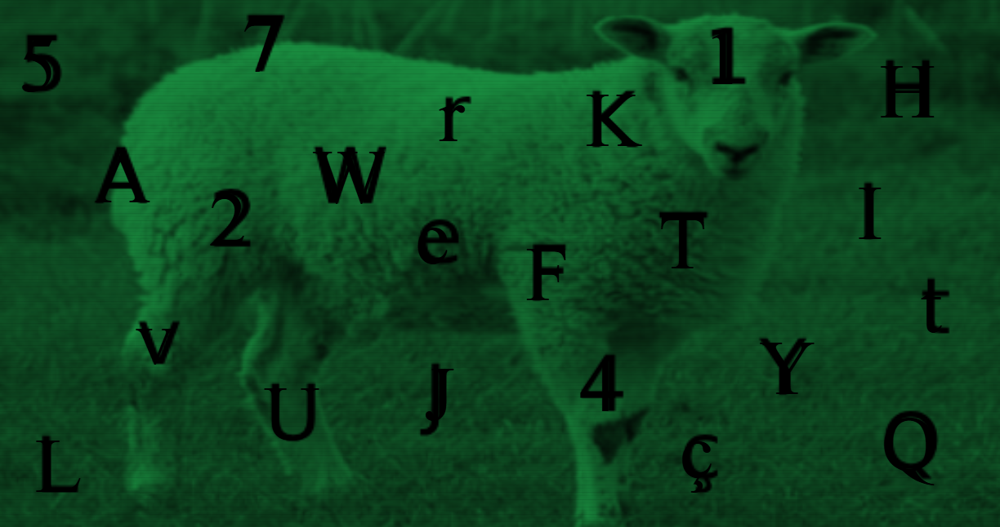

Sistema de recuperação de password ativado. Por motivos de segurança, apenas um fragmento do código de acesso original será exibido. O restante permanece encriptado até que a identidade do requerente seja confirmada. Insira os fragmentos do código de acesso no terminal para continuar as respetivas fases.
